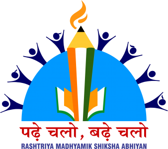
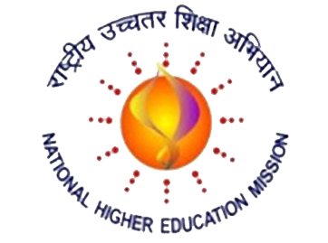
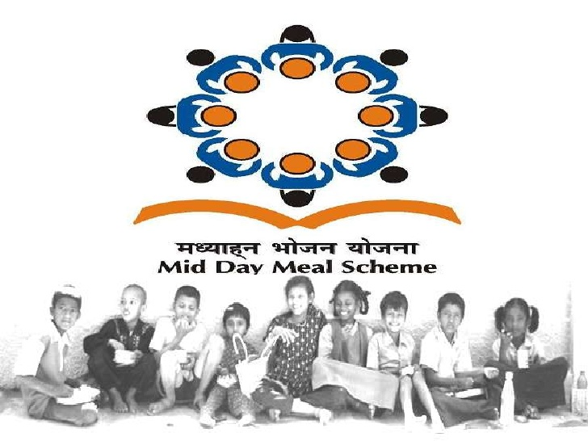
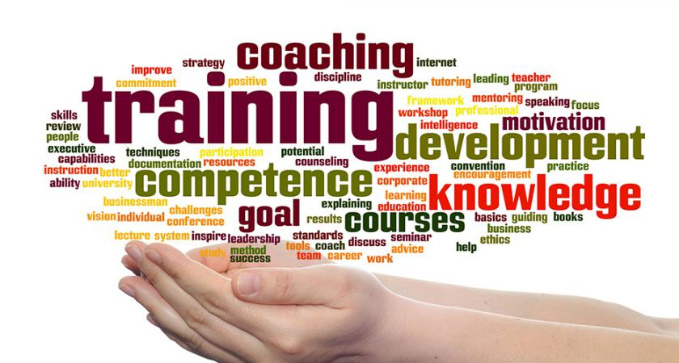
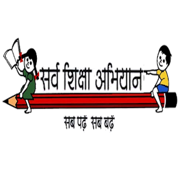

Toggle Menu

Higher Education
The Department of Higher Education, MHRD, is responsible for the overall development of the basic infrastructure of Higher Education sector, both in terms of policy and planning.

School Education & Literacy
The essence and role of education articulated in the National Policy on Education (NPE), 1986/92 continues to be relevant even 25 years after its formulation. National Policy on Education(NPE) states:

RMSA
This scheme was launched in March, 2009 with the objective to enhance access to secondary education and to improve its quality. The implementation of the scheme started from 2009-10. It is envisaged to achieve an enrolment rate of 75% from 52.26% in 2005-06 at secondary stage of implementation of the scheme by providing a secondary school within a reasonable distance of any habitation.

RUSA
Rashtriya Uchchatar Shiksha Abhiyan (RUSA) is a Centrally Sponsored Scheme (CSS), launched in 2013 aims at providing strategic funding to eligible state higher educational institutions. The central funding (in the ratio of 60:40 for general category States, 90:10 for special category states and 100% for union territories) would be norm based and outcome dependent.

Midday Meal Scheme
The Midday Meal Scheme is a school meal programme of the Government of India designed to improve the nutritional status of school-age children nationwide. The programme supplies free lunches on working days for children in primary and upper primary classes in government, government aided, local body, Education Guarantee Scheme, and alternate innovative education centres, Madarsa and Maqtabs supported under Sarva Shiksha Abhiyan, and National Child Labour Project schools run by the ministry of labour
Some More Important Schemes
Strengthening of Teacher's Training Institutes
Originally, the Government launched the Scheme of Restructuring and Re-organisation of Teacher Education in 1987. The aim of this scheme was to create a sound institutional infrastructure for pre-service and in-service training of elementary and secondary school teachers and for provision of academic resource support to elementary and secondary schools.
Last Updated by admin on Thursday, 22 March 2018 - 12:29pmScheme for Infrastructure Development in Minority Institutes (IDMI)
IDMI has been operationalisedto augment Infrastructure in Private Aided/Unaided Minority Schools/Institutions in order to enhance quality of education to minority children.
Last Updated by admin on Thursday, 22 March 2018 - 12:29pmMahila Samakhya Programme
“Education will be used as an agent of basic change in the status of woman. In order to neutralise the accumulated distortions of the past, there will be a well-conceived edge in favour of women.
Last Updated by admin on Friday, 4 March 2016 - 4:28pmLeave a Review
National Means Cum-Merit Scholarship Scheme (NMMSS)
The Centrally Sponsored Scheme “National Means-cum-Merit Scholarship Scheme (NMMSS)” was launched in May, 2008. The objective of the scheme is to award scholarships to meritorious students of economically weaker sections to arrest their drop out at class VIII and encourage them to continue the study at secondary stage. Scholarship of Rs. 6000/- per annum (Rs.500/- per month) per student is awarded to selected students every year for study in classes from IX to XII in State Government, Government aided and local body schools.

Scheme of Support to Voluntary Agencies for Adult Education & Skill Development
The main objective of the scheme is to secure extensive, as well as, intensive involvement of voluntary sector in the endeavours of the Government to promote functional literacy, skill development and continuing education, particularly in 15-35 age group, under the over all umbrella of National Literacy Mission (NLM).Mar 4, 2016

Sarva Shiksha Abhiyan
SSA has been operational since 2000-2001 to provide for a variety of interventions for universal access and retention, bridging of gender and ' social category gaps in elementary education and improving the quality of learning. SSA interventions include inter alia, opening of new schools and alternate schooling facilities, construction of schools and additional classrooms, toilets and drinking water, provisioning for teachers, regular teacher in service training and academic resource support, free textbooks& uniforms and support for improving learning achievement levels / outcome.